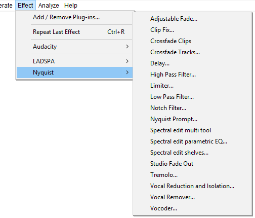

Effect Menu: Nyquist
Nyquist effects support saving of user presets but do not yet support real-time preview or import/export of presets from/to other machines.
- Click, or hover, on any menu item in the image to read about that command. Skip the image
- 
Nyquist effects
Nyquist plug-ins provide most of the optional effects underneath the divider in the Effect menu. They are also used to provide some of Audacity's built-in audio generators and analysis tools. A wide range of additional Nyquist effect, generation and analysis plug-ins can be obtained from Download Nyquist Plug-ins on our Wiki.
The button in most Nyquist effect dialogs opens a "Nyquist Output" window containing any informational or error output provided by the effect. This is primarily of use when writing or editing Nyquist plug-ins. After pressing in this window, the effect or other chosen action is attempted just as it would be if pressing OK in the effect instead of using the Debug button.
For detailed instructions on installing Nyquist plug-ins for Audacity see: Windows, Mac or Linux
To load the new effects into Audacity so they are available in the menu, use the Plug-in Manager: Effects, Generators and Analyzers dialog.
| Some Nyquist plug-ins could crash while processing very long audio selections (typically an hour or more). This is due to the plug-in using a large amount of memory and is a known issue in Audacity's current Nyquist implementation. Try using the plug-in on shorter selections instead. |
Nyquist Workbench
For advanced users who can compile Audacity, Nyquist Workbench gives the ability to run arbitrary Nyquist code in Audacity from a graphical IDE (Integrated Development Environment). See Nyquist Workbench in the Wiki for details.
Nyquist plug-ins included in Audacity
The following sample Nyquist plug-ins are included in released builds of Audacity:
Adjustable Fade...
Launches a dialog box where you can choose the shape of the fade in or fade out to be applied. You can also create fades to and from other than silence or full volume. An example of this might be a fade in from 20% of the original volume to 80% of the original volume.
Clip Fix...
Attempts to reconstruct clipped regions by interpolating the lost signal.
Crossfade Clips
Applies a simple crossfade to a selected pair of clips in a single audio track.
Crossfade Tracks
Applies a crossfade to a selected region of a pair of tracks.
Delay...
A configurable delay effect with variable delay time and pitch shifting of the delays.
High Pass Filter...
Passes frequencies above its cutoff frequency and attenuates frequencies below its cutoff frequency; this can be used to reduce low frequency noise.
Limiter...
Limiter passes signals below a specified input level unaffected or gently reduced, while preventing the peaks of stronger signals from exceeding this threshold. Limiting is a type of dynamic range compression. Mastering engineers often use limiting combined with make-up gain to increase the perceived loudness of an audio recording during the audio mastering process.
Low Pass Filter...
Passes frequencies below its cutoff frequency and attenuates frequencies above its cutoff frequency; this can be used to reduce high pitched noise.
Notch Filter...
Greatly attenuate ("notch out") a narrow frequency band. This is a good way to reduce mains hum or a whistle confined to a specific frequency with minimal damage to the remainder of the audio.
Nyquist Prompt...
Launches a dialog where you can enter Nyquist commands. Nyquist is a applicationming language for producing and processing audio. For more information see Nyquist Plug-ins Reference.
Spectral edit multi tool
If a fully defined spectral selection has been made, choosing Spectral edit multi-tool applies the appropriate filter for the selection. See Spectral edit multi tool for more information.
Spectral edit parametric EQ...
If a fully defined spectral selection has been made, the effect applies a band cut or band boost according to the value you enter in the "Gain (dB)" control. See Spectral edit parametric EQ for more information.
Spectral edit shelves...
If a fully defined spectral selection has been made, the effect applies a low shelf filter, high shelf filter or combined low and high shelf filter according to the value you enter in the "Gain (dB)" control. See Spectral edit shelves for more information.
Studio Fade Out
Produces a smooth and musical sounding fade out, by applying a sinusoidal fade with a progressive low pass filter from full spectrum at the start of the selection to 100 Hz at the end.
Tremolo...
Modulates the volume of the selection at the depth and rate selected in the dialog. The same as the tremolo effect familiar to guitar and keyboard players.
Vocal Reduction and Isolation...
Attempts to remove or isolate center-panned audio from a stereo track. Vocals are often (but not always) recorded in this way. The classic method achieves this by subtracting one channel from the other, but the result will be (dual) mono (this method can be found under the Actions menu in this effect as "Remove Center Classic (Mono)" and is a quick way to remove the center if only mono is needed). All other "Remove" options in this effect preserve the stereo image
Vocal Remover (for center-panned vocals)...
Attempts to remove center-panned audio from a stereo track. Vocals are often (but not always) recorded in this way. Vocals (or other audio) can only be removed with this plug-in when panned to center, in other words sounding equally loud in both left and right channels. Help text is available from within the effect's dialog box. This is a "Legacy effect": the same result can be achieved by using the Remove Center Classic (Mono) option in Vocal Reduction and Isolation.
Vocoder...
Vocoder synthesizes a modulator (usually a voice) in the left channel of a stereo track with a carrier wave in the right channel to produce a modified version of the left channel. Vocoding a normal voice with white noise as provided in the effect will produce a robot-like voice for special effects. Other carriers can be used for subtly different voices. Vocoder can only be applied to unsplit stereo tracks.